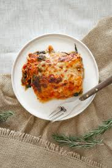

Lasagna

Lasagna is a classic Italian pasta dish. It is a baked casserole with layers of pasta, cheese, meat, or vegetables, and sauce. It has become a global favorite, with variations enjoyed in diverse cultures and cuisine
Lasagna can be customized to individual preferences and dietary restrictions. While traditional recipes typically call for ricotta cheese, cottage cheese can be substituted for a lighter version.
Ingredients
- Ground Meat
- Aromatic
- Tomatoes
- Seasonings
Instructions
- Prepare the Meat Sauce: Cook onion in olive oil, then add ground beef and sausage, browning and draining excess fat. Stir in garlic, then add tomato paste and cook for 1 minute. Add pasta sauce, seasonings, sugar, salt, and pepper. Simmer for 30 minutes until slightly thickened.
- Prepare the Cheese Mixture: Combine ricotta or cottage cheese, egg, parsley, salt, and pepper in a bowl and mix.
- Cook the Lasagna Noodles (if using regular noodles): Boil noodles in salted water according to package directions, drain, and rinse with cold water. Skip if using no-boil noodles.
- Assemble the Lasagna: Preheat oven to 375°F (190°C). Grease a 9x13-inch baking dish. Spread about 1 cup of meat sauce on the bottom. Layer with noodles, 1/3 of the ricotta mixture, and about 1.5 cups of meat sauce. Repeat the layers twice more, ending with noodles and meat sauce. Top with mozzarella and Parmesan cheese.
- Bake the Lasagna: Cover with foil (spraying underside) and bake for 30-45 minutes for cooked noodles, or 45-50 minutes for no-boil noodles. Remove foil and bake for another 10-15 minutes until bubbly and golden. Broil for 2-3 minutes for a crispy topping.
- Rest and Serve: Let the lasagna rest for at least 15-20 minutes before cutting
Home page